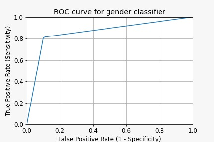

Projects
A selection of personal and academic projects focused on machine learning, data pipelines, and full-stack integration.
Company Researcher
An automated pipeline that interfaces with the SEC API to fetch the latest publicly traded company 10-K filings. It isolates the core Business Section (Item 1) and utilizes Gemini to generate structured, insightful summaries.
Key Achievement: Eliminated manual regulatory document parsing, enabling rapid, automated competitive analysis of company business models.

AutoScroll Browser Extension
A lightweight Chrome/Edge extension that enables smooth, customizable auto-scrolling for long-form content. Features an intuitive popup interface with a real-time speed control slider for precise, dynamic adjustments.
Key Achievement: Engineered a low-friction accessibility tool that reduces screen fatigue and enables seamless hands-free browsing.

Neural Networks from Scratch
A core implementation of neural networks built entirely without deep learning frameworks. The project traces the evolution from raw arrays and manual dot products to highly optimized NumPy matrix operations.
Key Achievement: Implemented custom forward/backward passes, activation functions, and loss functions purely from mathematical first principles.

Gender Predictor with JavaFX UI
A cross-language application featuring a Python machine learning backend and a JavaFX graphical user interface. It provides real-time predictions and interactive visual metrics, including confusion matrices and ROC curves.
Key Achievement: Successfully bridged a Python inference backend with a Java frontend to deliver a user-friendly model evaluation platform.